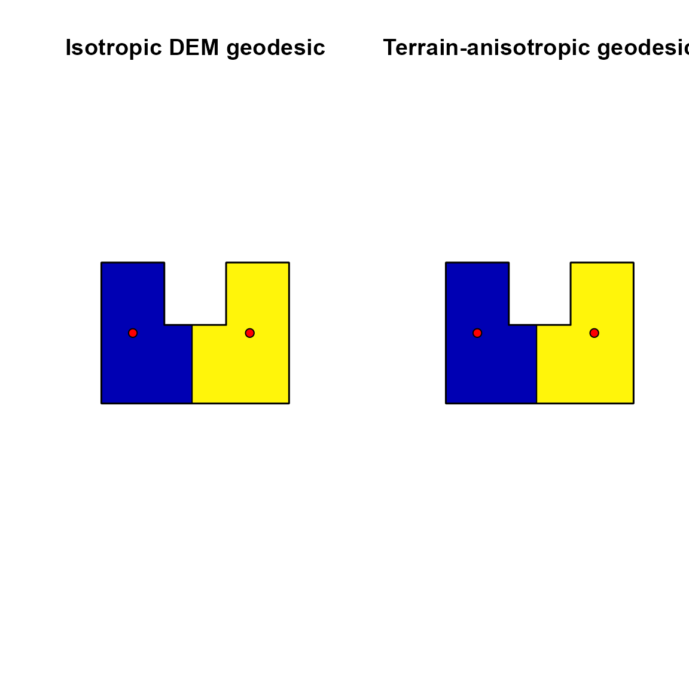
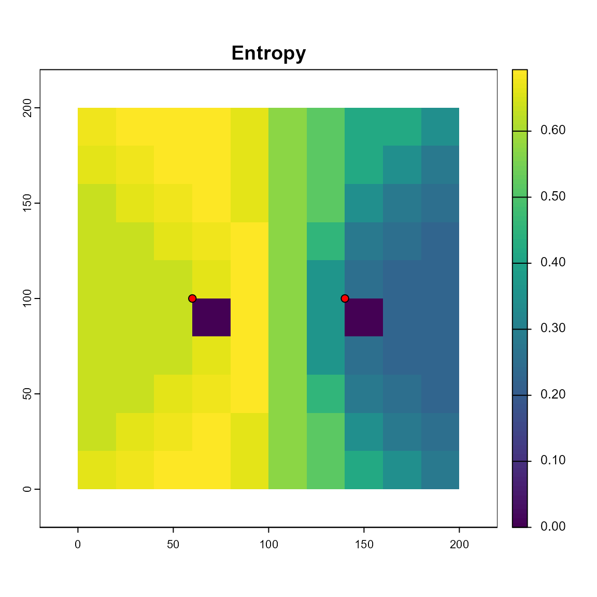
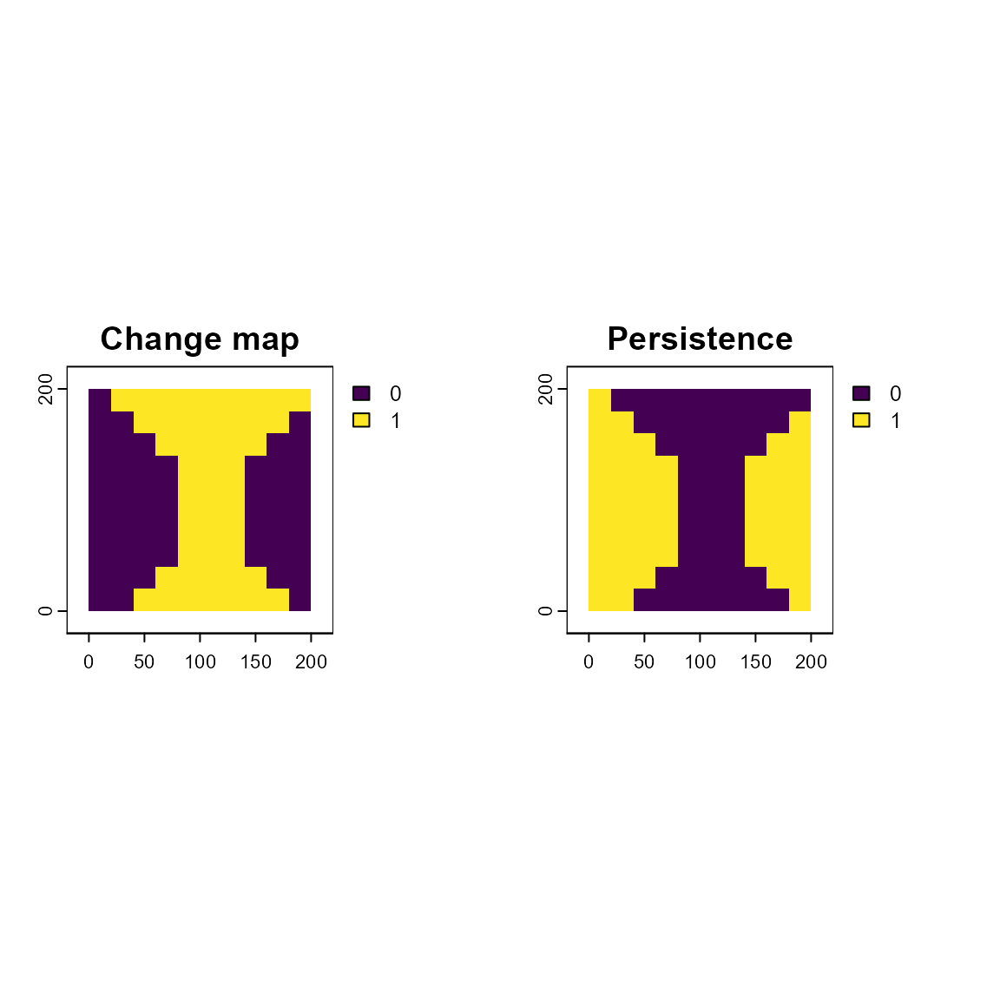

Weighted spatial tessellations in constrained domains
Source:vignettes/weighted-voronoi.Rmd
weighted-voronoi.Rmd
library(sf)
#> Linking to GEOS 3.13.0, GDAL 3.10.1, PROJ 9.5.1; sf_use_s2() is TRUE
library(terra)
#> terra 1.8.42
library(weightedVoronoi)Introduction
Spatial allocation around point locations is a recurring requirement in ecology and social–ecological research, including the delineation of settlement influence zones, species territories, and management areas. Voronoi tessellations provide a simple and transparent framework for dividing space among generators, but standard implementations assume uniform influence and unconstrained Euclidean distance.
The weightedVoronoi package extends this framework by allowing (i) generator-specific weights, (ii) tessellations constrained to arbitrary polygonal domains using either Euclidean or geodesic distance, (iii) optional resistance- and terrain-informed geodesic allocation, and (iv) uncertainty-aware and temporal tessellation workflows.
Choosing an appropriate workflow
weightedVoronoi provides multiple tessellation methods that differ in how distance is defined, how movement is constrained, and how analyses are structured. The appropriate choice depends on both your data and your research question.
1. Euclidean vs geodesic distance
The first decision is how distance should be measured.
- Euclidean tessellation (
distance = "euclidean") Uses straight-line distance Fast and simple Appropriate when space is open and unconstrained - Geodesic tessellation (
distance = "geodesic") Uses shortest-path distance within the domain Respects boundaries, concavities, and barriers Recommended when movement cannot occur across gaps (e.g. coastlines, habitat patches)
2. Should landscape resistance be included?
Geodesic distance can be modified by environmental resistance:
- No resistance (default) → movement cost is uniform
- Custom resistance surface (
resistance_rast) → incorporate land cover, risk, infrastructure, etc. - Elevation-based resistance
(
dem_rast, use_tobler = TRUE) → movement cost increases with slope
Use resistance when:
- movement is not equally easy everywhere
- terrain or land cover affects accessibility
3. Is movement direction-dependent?
By default, resistance is isotropic: - cost depends on slope magnitude only
For directional effects (e.g. uphill vs downhill): - set
anisotropy = "terrain"
This enables: - asymmetric movement costs - more realistic modelling in steep terrain
4. Single run vs repeated workflows
Single tessellation - Use weighted_voronoi_domain()
for:
- one-off analyses
- static allocation problems
Repeated geodesic runs (performance-critical)
If you are running many tessellations with the same domain:
ctx <- prepare_geodesic_context(...)Then reuse:
weighted_voronoi_domain(..., prepared = ctx)This avoids rebuilding the transition graph and can substantially reduce runtime.
5. Multisource vs classic geodesic engine
For geodesic tessellations:
- classic engine general-purpose works with all configurations
- multisource engine faster for repeated runs requires:
weight_model = "additive"anisotropy = "none"
Recommended when:
- running many simulations
- performing uncertainty or temporal analyses
6. Uncertainty and temporal workflows
Uncertainty in weights
Use:
to: - propagate uncertainty in generator weights - obtain probability and entropy maps
Example data
We first define a concave, irregular spatial domain and a set of generator points with heterogeneous weights.
crs_use <- 32636 # projected CRS (metres)
make_irregular_boundary <- function(crs = crs_use) {
# A simple concave polygon (fast, deterministic, vignette-safe)
coords <- rbind(
c(0, 0),
c(1200, 0),
c(1200, 900),
c(800, 900),
c(800, 500),
c(400, 500),
c(400, 900),
c(0, 900),
c(0, 0)
)
st_sf(geometry = st_sfc(st_polygon(list(coords))), crs = crs)
}
boundary_sf <- make_irregular_boundary()
set.seed(42)
pts <- st_sample(boundary_sf, size = 8, type = "random")
points_sf <- st_sf(
village = paste0("V", seq_along(pts)),
population = round(exp(rnorm(length(pts), log(300), 0.8))),
geometry = pts,
crs = crs_use
)
plot(st_geometry(boundary_sf), border = "black", lwd = 2)
plot(st_geometry(points_sf), add = TRUE, pch = 21, bg = "red")Weighted Euclidean tessellation
We first generate a weighted tessellation using Euclidean distance. Generator influence is scaled using a logarithmic transformation of the population weights.
out_euc <- weighted_voronoi_domain(
points_sf = points_sf,
weight_col = "population",
boundary_sf = boundary_sf,
res = 20,
weight_transform = log10,
distance = "euclidean",
# Optional alternative weight semantics:
weight_model = "multiplicative",
clip_to_boundary = TRUE,
verbose = FALSE
)
plot(st_geometry(boundary_sf), border = "black", lwd = 2)
plot(out_euc$polygons["generator_id"], add = TRUE)
plot(st_geometry(points_sf), add = TRUE, pch = 21, bg = "red")Weighted geodesic tessellation
Geodesic tessellations compute shortest-path distances constrained to the domain.
out_geo <- weighted_voronoi_domain(
points_sf = points_sf,
weight_col = "population",
boundary_sf = boundary_sf,
res = 20,
weight_transform = log10,
distance = "geodesic",
close_mask = TRUE,
close_iters = 1,
verbose = FALSE
)
plot(st_geometry(boundary_sf), border = "black", lwd = 2)
plot(out_geo$polygons["generator_id"], add = TRUE)
plot(st_geometry(points_sf), add = TRUE, pch = 21, bg = "red")By default, geodesic allocation uses the "classic"
engine, which computes one accumulated-cost surface per generator. For
additive isotropic geodesic tessellations, a faster
"multisource" engine is also available:
out_geo_fast <- weighted_voronoi_domain(
points_sf = points_sf,
weight_col = "population",
boundary_sf = boundary_sf,
res = 20,
distance = "geodesic",
weight_model = "additive",
geodesic_engine = "multisource",
verbose = FALSE
)The multisource engine is currently available for additive isotropic
geodesic tessellations (weight_model = "additive" and
anisotropy = "none").
Custom resistance surfaces and barriers
In many ecological and social–ecological applications, effective distance is shaped not only by domain geometry but also by environmental resistance. Topography, land cover, and infrastructure can increase or block movement.
The recommended workflow is to build a resistance surface (optionally composed from multiple rasters), apply barriers, and then pass the result to weighted_voronoi_domain() via resistance_rast.
# Build a template grid (aligned to the analysis)
template <- out_euc$allocation
# Two simple resistance layers (for demonstration)
R_land <- template; terra::values(R_land) <- 1
R_land[template == 1] <- 2 # small spatial pattern
R_risk <- template; terra::values(R_risk) <- 1
xy <- terra::xyFromCell(R_risk, 1:terra::ncell(R_risk))
band <- xy[,1] > 450 & xy[,1] < 550
vals <- terra::values(R_risk); vals[band] <- 10; terra::values(R_risk) <- vals
# Compose layers (multiplicative by default)
R <- compose_resistance(R_land, R_risk, template = template, method = "multiply")
# Add a river barrier (semi-permeable)
river <- st_sf(
geometry = st_sfc(st_linestring(rbind(c(500, 0), c(500, 900)))),
crs = st_crs(boundary_sf)
)
R2 <- add_barriers(R, river, permeability = "semi", cost_multiplier = 20, width = 20)
out_geo_res <- weighted_voronoi_domain(
points_sf = points_sf,
weight_col = "population",
boundary_sf = boundary_sf,
res = 20,
weight_transform = log10,
distance = "geodesic",
resistance_rast = R2,
verbose = FALSE
)
plot(st_geometry(boundary_sf), border = "black", lwd = 2)
plot(out_geo_res$polygons["generator_id"], add = TRUE)
plot(st_geometry(points_sf), add = TRUE, pch = 21, bg = "red")Geodesic tessellations with isotropic elevation-dependent resistance
In many ecological and social–ecological applications, effective
distance is shaped not only by domain geometry but also by environmental
resistance. Topography, land cover, or infrastructure may increase the
cost of movement between locations. To accommodate this,
weightedVoronoi allows geodesic distance calculations to be
modified by an isotropic resistance surface.
When a digital elevation model (DEM) is supplied and
use_tobler = TRUE, movement cost is adjusted using Tobler’s
hiking function, which increases effective distance across steep
slopes.
# Create a synthetic DEM on the same grid for a lightweight vignette example
bnd_v <- terra::vect(boundary_sf)
dem <- terra::rast(ext = terra::ext(bnd_v), resolution = 20, crs = terra::crs(bnd_v))
xy <- terra::crds(dem, df = TRUE)
y0 <- (min(xy$y) + max(xy$y)) / 2
sigma <- (max(xy$y) - min(xy$y)) / 10
height <- 800
terra::values(dem) <- height * exp(-((xy$y - y0)^2) / (2 * sigma^2))
out_geo_dem <- weighted_voronoi_domain(
points_sf = points_sf,
weight_col = "population",
boundary_sf = boundary_sf,
res = 20,
weight_transform = log10,
distance = "geodesic",
dem_rast = dem,
use_tobler = TRUE,
verbose = FALSE
)
plot(st_geometry(boundary_sf), border = "black", lwd = 2)
plot(out_geo_dem$polygons["generator_id"], main = "Geodesic + Tobler resistance", add = TRUE)
plot(st_geometry(points_sf), add = TRUE, pch = 21, bg = "red")Terrain-anisotropic geodesic tessellations
The DEM-based geodesic workflow above uses isotropic resistance: movement cost depends on slope magnitude, but not on movement direction. In some applications, however, uphill and downhill movement should differ. For example, steep uphill travel may be more costly than downhill travel, even across the same terrain.
weightedVoronoi therefore also supports a
terrain-anisotropic geodesic mode, in which movement between
neighbouring raster cells becomes direction-dependent. This requires a
DEM and uses a directed transition graph internally.
Below, we use a simple synthetic eastward-rising DEM and compare isotropic and terrain-anisotropic geodesic allocation.
# Terrain-anisotropy example (self-contained)
crs_use2 <- 32636
boundary_sf2 <- st_sf(
id = 1,
geometry = st_sfc(
st_polygon(list(rbind(
c(0, 0),
c(1200, 0),
c(1200, 900),
c(800, 900),
c(800, 500),
c(400, 500),
c(400, 900),
c(0, 900),
c(0, 0)
))),
crs = crs_use2
)
)
dem_aniso <- terra::rast(
ext = terra::ext(terra::vect(boundary_sf2)),
resolution = 20,
crs = terra::crs(terra::vect(boundary_sf2))
)
xy2 <- terra::crds(dem_aniso, df = TRUE)
terra::values(dem_aniso) <- xy2$x * 10
pts2 <- st_sf(
village = c("A", "B"),
population = c(1, 1),
geometry = st_sfc(
st_point(c(200, 450)),
st_point(c(950, 450))
),
crs = crs_use2
)
out_geo_iso2 <- weighted_voronoi_domain(
points_sf = pts2,
weight_col = "population",
boundary_sf = boundary_sf2,
res = 20,
distance = "geodesic",
dem_rast = dem_aniso,
use_tobler = TRUE,
anisotropy = "none",
verbose = FALSE
)
#> Warning: attribute variables are assumed to be spatially constant throughout
#> all geometries
out_geo_aniso2 <- weighted_voronoi_domain(
points_sf = pts2,
weight_col = "population",
boundary_sf = boundary_sf2,
res = 20,
distance = "geodesic",
dem_rast = dem_aniso,
use_tobler = TRUE,
anisotropy = "terrain",
uphill_factor = 3,
downhill_factor = 1.2,
verbose = FALSE
)
#> Warning: attribute variables are assumed to be spatially constant throughout
#> all geometries
par(mfrow = c(1, 2))
plot(st_geometry(boundary_sf2), border = "black", lwd = 2, main = "Isotropic DEM geodesic")
plot(out_geo_iso2$polygons["generator_id"], add = TRUE)
plot(st_geometry(pts2), add = TRUE, pch = 21, bg = "red")
plot(st_geometry(boundary_sf2), border = "black", lwd = 2, main = "Terrain-anisotropic geodesic")
plot(out_geo_aniso2$polygons["generator_id"], add = TRUE)
plot(st_geometry(pts2), add = TRUE, pch = 21, bg = "red")
In this example, uphill and downhill movement are treated
differently, so the terrain-anisotropic tessellation can diverge from
the isotropic DEM-based result. The parameters
uphill_factor and downhill_factor control the
strength of this directional asymmetry.
Uncertainty-aware tessellations
In some applications, generator weights are not known exactly. To
explore how this uncertainty affects allocation,
weightedVoronoi can repeat the tessellation under
stochastic perturbation of generator weights and summarise the results
as per-cell membership probabilities and entropy.
In the current implementation, uncertainty is applied to generator weights only. For each simulation, weights are perturbed using a lognormal multiplicative model, the tessellation is recomputed, and the allocation rasters are combined into probability surfaces. Entropy is then used to summarise spatial uncertainty: low entropy indicates stable assignment, whereas high entropy indicates cells that switch more often among generators.
crs_u <- "EPSG:32636"
boundary_u <- st_sf(
geometry = st_sfc(st_polygon(list(rbind(
c(0, 0),
c(200, 0),
c(200, 200),
c(0, 200),
c(0, 0)
)))),
crs = crs_u
)
points_u <- st_sf(
population = c(0.01, 0.02),
geometry = st_sfc(
st_point(c(60, 100)),
st_point(c(140, 100))
),
crs = crs_u
)
out_u <- weighted_voronoi_uncertainty(
points_sf = points_u,
weight_col = "population",
boundary_sf = boundary_u,
n_sim = 100,
weight_sd = 0.8,
distance = "geodesic",
geodesic_engine = "multisource",
weight_model = "additive",
verbose = FALSE,
seed = 1
)
plot(out_u$entropy, main = "Entropy")
plot(terra::vect(points_u), add = TRUE, pch = 21, col = "black", bg = "red")
Temporal tessellations
weightedVoronoi can also run tessellations across a
sequence of time-specific point datasets. This makes it possible to
compare allocation through time while allowing generator weights,
locations, and resistance inputs to vary by time step.
pts_t1 <- points_u
pts_t2 <- points_u
pts_t2$population <- c(0.02, 0.01)
out_time <- weighted_voronoi_time(
points_list = list(time1 = pts_t1, time2 = pts_t2),
weight_col = "population",
boundary_sf = boundary_u,
distance = "geodesic",
geodesic_engine = "multisource",
weight_model = "additive",
verbose = FALSE
)
#> Warning: attribute variables are assumed to be spatially constant throughout
#> all geometries
#> Warning: attribute variables are assumed to be spatially constant throughout
#> all geometries
par(mfrow = c(1, 2))
plot(out_time$change_map_first_last, main = "Change map")
plot(out_time$persistence, main = "Persistence")
In this example, change_map_first_last identifies cells
whose allocation differs between the first and last time step, while
persistence highlights cells that retain the same
allocation across the full temporal sequence.
Comparing Euclidean and geodesic tessellations
Although both tessellations fully partition the domain, they differ in how influence propagates through concave boundaries and narrow corridors. The Euclidean tessellation allocates regions based on straight-line distance within the rasterised domain, whereas the geodesic tessellation respects the domain geometry and prevents influence across inaccessible areas.
These differences are reflected both visually and in the generator-level summary tables returned by the software.
out_euc$summary
out_geo$summaryPractical considerations
Resolution: Smaller raster cell sizes improve boundary fidelity but increase computation time.
Weights: Alternative weight transformations (e.g. square-root or power-law) can be supplied to reflect different assumptions about generator influence.
Distance metric: Geodesic distance is recommended when domain geometry strongly constrains access or interaction.
Terrain anisotropy: Use
anisotropy = "terrain"withdem_rastwhen uphill and downhill movement should differ.Uncertainty: If entropy is zero everywhere, the tessellation may simply be robust to the perturbation level used; stronger perturbations or a smaller spatial domain may be needed to reveal uncertainty.
Temporal analysis:
weighted_voronoi_time()supports time-specific point datasets and can return change and persistence maps.
Summary
This vignette illustrates how weightedVoronoi can be used to generate reproducible, weighted spatial tessellations that respect complex boundaries and heterogeneous generator influence. The approach provides a flexible alternative to standard Voronoi methods in ecological and social–ecological applications.